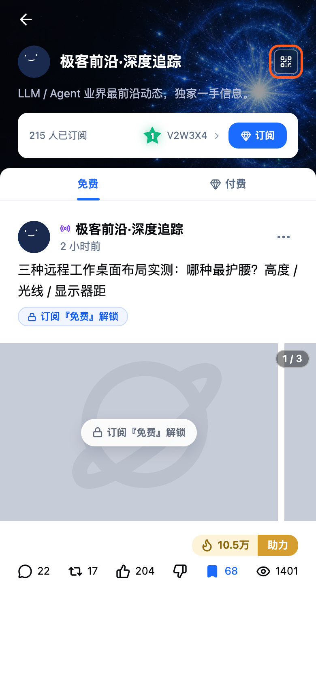
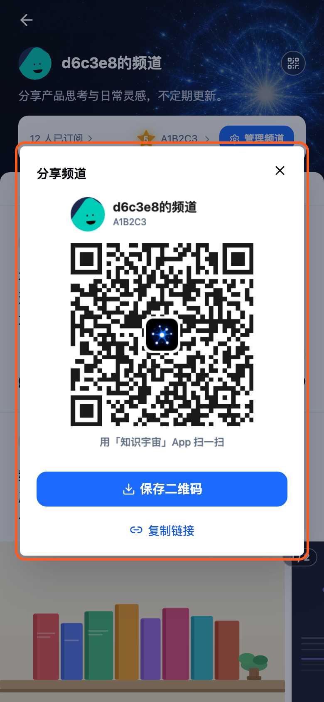
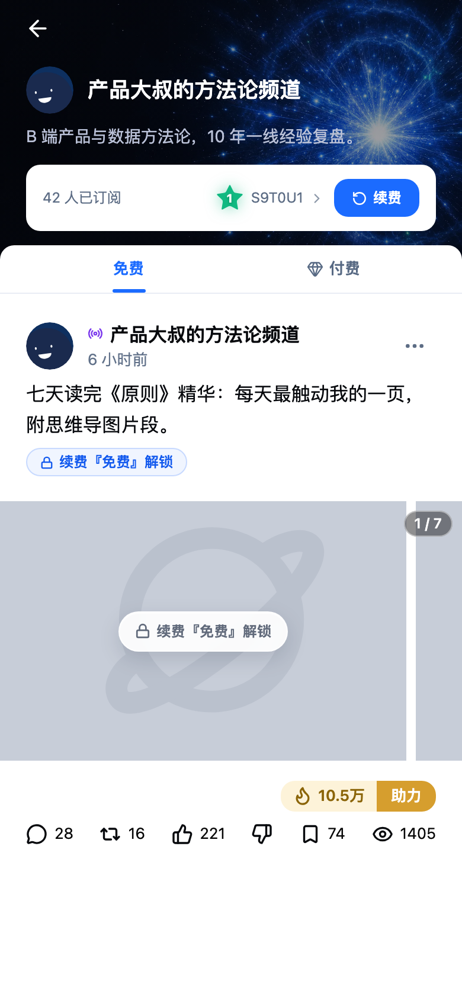

屏 1
频道主页：分享按钮新增
- 信息广场首页
- 点击频道帖子的频道名
- 频道主页
- 频道主页封面右上角新增圆形二维码按钮，自己的频道和他人的频道都可分享
开发注意
- 任何用户都可分享任意频道，分享内容为该频道的二维码与链接

屏 2
分享频道弹窗新增
- 频道主页
- 分享按钮
- 分享频道弹窗
- 弹窗以频道二维码名片为主：顶部左侧是频道头像，右侧是频道名和节点码；中间是大尺寸二维码，中心嵌知识宇宙 logo；底部是「用知识宇宙 App 扫一扫」。他人可直接扫描屏幕，弹窗里展示的就是保存下来的图片，下方是「保存二维码」主按钮
- 最下方是「复制链接」文字按钮，复制的链接与二维码指向同一个频道
开发注意
- 复制链接：复制频道链接到剪贴板，并提示「链接已复制」
- 保存二维码：保存的名片图片包含频道头像、频道名（加粗，最多两行，超出截断加省略号）、节点码、带 logo 的二维码和扫码说明；保存成功后提示「二维码已保存到相册」，图片生成完成前按钮置灰
- 二维码中心嵌 logo，生成时使用最高容错等级（H），保证遮挡后仍可识别
- 节点码用于扫码不便时的兜底：在搜索框输入节点码可直达频道
- 二维码只编码频道 ID；频道改名后，旧图上的名字不变，扫码仍进入同一频道
- 原型中链接为占位域名，正式链接格式由后端给出，需能被 App 扫码识别为频道

屏 3
扫码直达频道新增
- 信息广场首页
- 扫一扫
- 频道主页
- 信息广场首页顶栏的扫一扫按钮可识别频道二维码
- 识别到频道二维码后提示「识别成功，正在跳转到频道」，随后进入对应频道主页
开发注意
- 原型为模拟扫码，固定时长后跳转到演示频道；正式实现需解析二维码中的频道 ID 后跳转
- 识别到商品二维码时保持原有逻辑，跳转商品详情